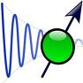

Systems and Software lab

Welcome to System and Software Lab

Introduction
The goal of this lab is to increase the students knowledge and practice of basic but essential tasks of system administration. This skill will be valuable in both increasing the student's productivity in working with (Linux based) computers, and in stimulating his/her enthusiasm and interest in systems related software engineering.
Good IT systems engineers are a rare commodity. Part of this is due to the absence of good traning facilities (labs, workshops, etc.) and laboratory programmes for teaching the nuts and bolts of IT systems engineering in a hands-on fashion. This seems somewhat paradoxical, considering the large and pervasive use of personal computers (laptops, netbooks, mobile computing, etc.). The shortage of experimental platforms needed for learning IT systems in a hands-on way is one reason for the lack of quality education in this important area of IT. For most students who have access to a PC, their ability to experiment on that machine is limited by the risk of possibly irrecoverable damage their experimentation may cause to the equipment, which is often expensive.
To mitigate this problem, we propose a virtual laboratory for systems and software. Students will interact with a remote virtual instance of a linux machine via a web browser. The browser provides an enhanced input interface compared to the shell prompt. The browser runs on an ordinary machine running window, linux or any other OS. The browser also allows for integrating teaching material and other learning artifacts (like a lab notebook, manual, etc.) to coexist as part of a learning system. In addition, the raw output from the remote machine displayed can be embellished or styled with other annotations on the browser. There will be no downloads, and no risk of damaging one's machine by a failed experiment. Virtual platforms can also be designed to be scalable so that each student gets his or her own "lab." Thus the virtual laboratory provides a safe and scalable experimental platform for the student to learn basic system administration.
List of Experiments
Date: 2011-06-20 16:06:26 IST
HTML generated by org-mode 6.33x in emacs 23